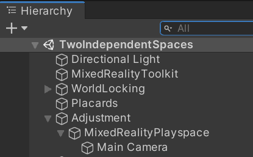
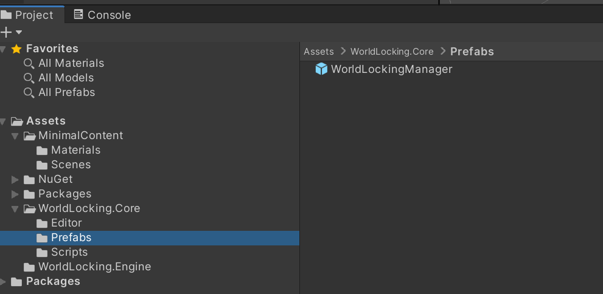
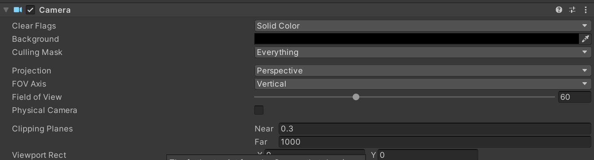
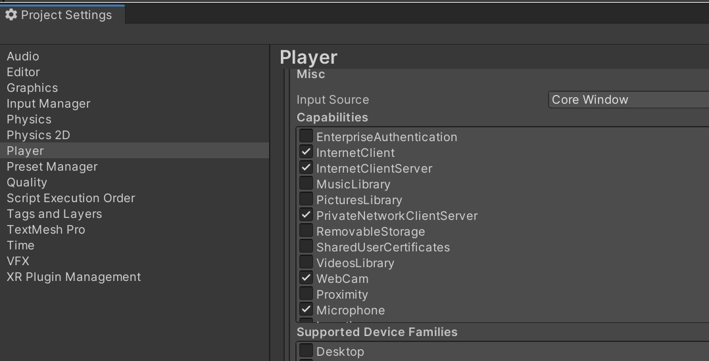

Minimal World Locking Tools (WLT) setup for a world-locked application
This Tutorial will walk you through adding the minimum required subset of the WLT to a project, in order to get world-locked behavior out of all the content in that application, without the need for application maintained WorldAnchors, or any other special behavior.
This tutorial refers to the 01_Minimal sample for reference, but the same steps would apply when adding to any existing project.
The simple application being world-locked here is the simplest possible Unity AR application. Note that the setup is even simpler for MRTK applications. Any differences between adding to a bare versus MRTK app are noted in the steps.
For tips on getting started with HoloLens development, see the final section of this article.
Project source assets
https://github.com/microsoft/MixedReality-WorldLockingTools-Samples/tree/master/Tutorial/01_Minimal
World Locking Tools specific setup
- Add an Adjustment node, and attach the Main Camera object to it.
- It should look like this:

- Or, if using MRTK, like this:

Install the FrozenWorld Engine DLL.
a. Install NuGet for Unity. It's really a phenomenal piece of technology, you should have it anyway. If for any reason you can't use NuGet for Unity, follow the steps for Manual FrozenWorld Engine DLL Installation, and proceed to step 3.
b. With NuGet for Unity installed, in Unity, go to
NuGet > Manage NuGet Packages- Search for FrozenWorld.Engine, and install the latest version of Microsoft.MixedReality.Unity.FrozenWorld.Engine.

- Download and import the latest version of the Microsoft.MixedReality.Unity.WorldLockingTools.CoreEngine unity package from releases.

In your Unity Project, go to
Assets > WorldLocking.Core > Prefabs- Drag the WorldLockingManager prefab into your scene.

At this point your project should look a lot like 01_Minimal. A few visual reference points (colored capsules) have been added to the MinimalScene in 01_Minimal, just so you can see that it is working (the capsules remain fixed relative to real world features around them during the session, and even persisting across sessions).
Bonus round - adding anchor graph visualization
The application as-is will now do basic world locking. Any objects you add to the scene will be placed in the physical world relative to the head position on first running the application. They will then remain in fixed pose relative to the physical world through the session, and even across sessions. That's all your application requires for basic world-locking.
It can be useful to visualize the world anchor graph which the World Locking Tools creates and maintains as the underlying stabilization structure. Doing so is quite easy.
Download and import the version of Microsoft.MixedReality.Unity.WorldLockingTools.Tools which corresponds with the CoreEngine package you previously imported.
In your Unity Project, go to
Assets > WorldLocking.Tools > PrefabsDrag the AnchorGraphVisual prefab into your scene. At this point it can be helpful to create a WorldLocking empty object in your scene and attach your WorldLockingManager and your AnchorGraphVisual objects to it. There is no functional impact, but it helps avoid cluttering up your scene.
That's it. Now when you deploy, you will see the graph of WorldAnchor nodes created under the hood, along with some other helpful visualizations. More description is available in the Tools documentation.
When you decide you don't need the visualizations anymore, you can either disable the AnchorGraphVisual in the scene or delete it.
Assumed HoloLens deployment background
If unfamiliar with building, deploying, and running applications on the HoloLens family of devices, a good place to start is with HoloLens and HoloLens 2 tutorials.
In addition, here are some emphasized tips common to all HoloLens development. Note that these are handled automatically by MRTK.
- Check the camera clear color. The
Clear Flagsshould be "Solid Color", and the color should be transparent black (0,0,0,0).

- Check permissions.
Project Settings > Player > Publishing Settings > CapabilitiesYou generally want the following enabled:- InternetClient
- InternetClientServer
- PrivateNetworkClientServer
- WebCam
- Microphone
- GazeInput

- Make it a MR app. Go to
Project Settings > Player > XR Settings(make sure you're on the UWP tab).- Click
Virtual Reality Supported - Add
Windows Mixed RealitytoVirtual Reality SDKs - Optionally set
Depth Formatto 16-bit.
- Click